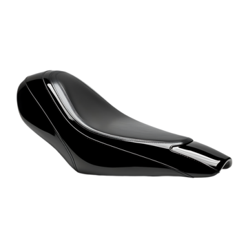
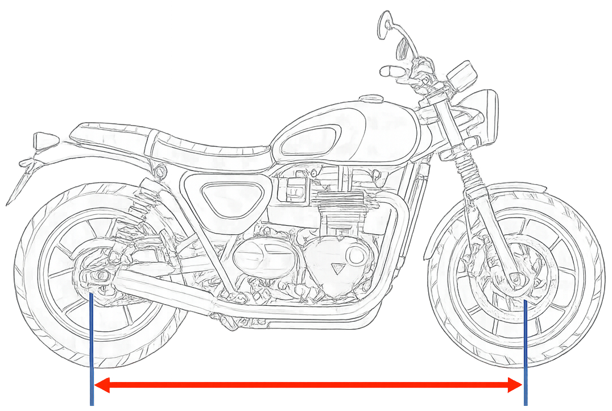
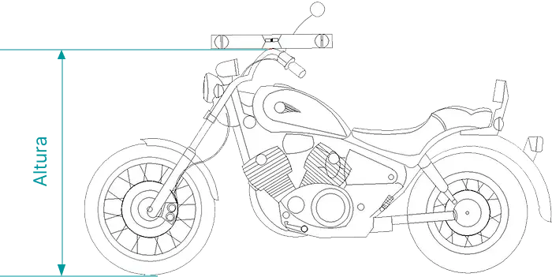
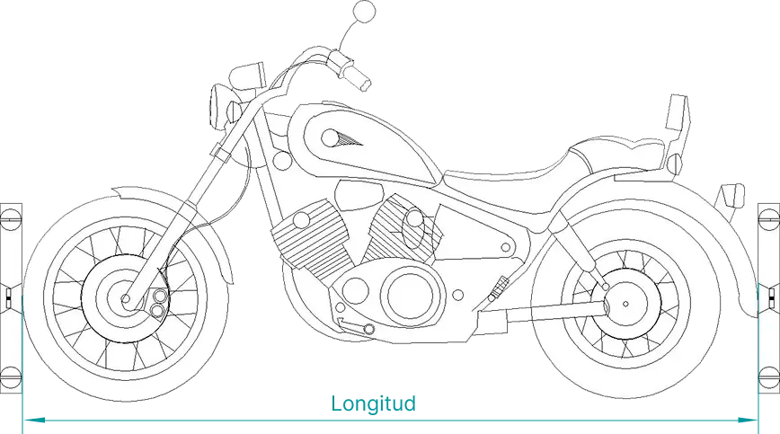
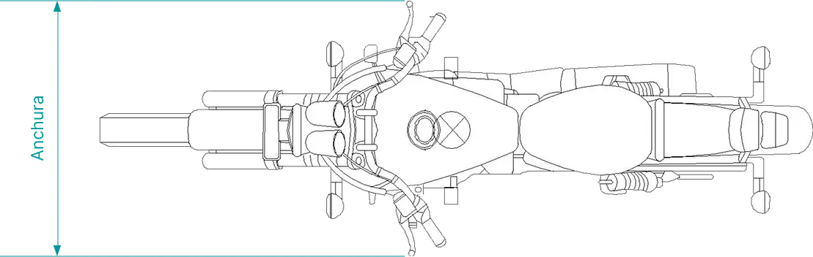
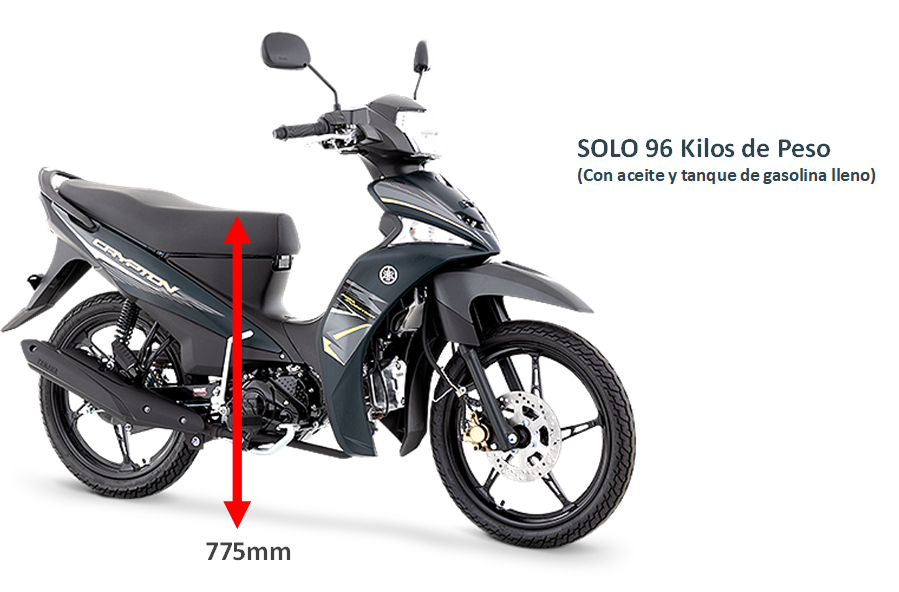

Altura del asiento
Define qué tan cómodo te sentirás al manejar. Si es muy alta, puede ser difícil apoyar los pies en el suelo..

aqui una lista de modelos que puden ser de utilidad
- 795 mm (31.3 inches) If adjustable, lowest setting.
- 790 mm (31.1 inches) If adjustable, lowest setting.
- 692 mm (27.2 inches) If adjustable, lowest setting.
- 712 mm (28.0 inches) If adjustable, lowest setting.
- 851 mm (33.5 inches) If adjustable, lowest setting.
- 850 mm (33.5 inches) If adjustable, lowest setting.
- 773 mm (30.4 inches) If adjustable, lowest setting.
- 740 mm (29.1 inches) If adjustable, lowest setting.
- 710 mm (28.0 inches) If adjustable, lowest setting.
- 830 mm (32.7 inches) If adjustable, lowest setting.
- 816 mm (32.1 inches) If adjustable, lowest setting.
- 767 mm (30.2 inches) If adjustable, lowest setting.
- 766 mm (30.2 inches) If adjustable, lowest setting.
- 810 mm (31.9 inches) If adjustable, lowest setting.
- 800 mm (31.5 inches) If adjustable, lowest setting.
- 899 mm (35.4 inches) If adjustable, lowest setting.
- 820 mm (32.3 inches) If adjustable, lowest setting.
- 828 mm (32.6 inches) If adjustable, lowest setting.
- 788 mm (31.0 inches) If adjustable, lowest setting.
- 780 mm (30.7 inches) If adjustable, lowest setting.
- 785 mm (30.9 inches) If adjustable, lowest setting.
- 690 mm (27.2 inches) If adjustable, lowest setting.
- 770 mm (30.3 inches) If adjustable, lowest setting.
- 805 mm (31.7 inches) If adjustable, lowest setting.
- 729 mm (28.7 inches) If adjustable, lowest setting.
- 918 mm (36.1 inches) If adjustable, lowest setting.
- 930 mm (36.6 inches) If adjustable, lowest setting.
- 855 mm (33.7 inches) If adjustable, lowest setting.
- 826 mm (32.5 inches) If adjustable, lowest setting.
- 835 mm (32.9 inches) If adjustable, lowest setting.
- 825 mm (32.5 inches) If adjustable, lowest setting.
- 845 mm (33.3 inches) If adjustable, lowest setting.
- 909 mm (35.8 inches) If adjustable, lowest setting.
- 815 mm (32.1 inches) If adjustable, lowest setting.
- 635 mm (25.0 inches) If adjustable, lowest setting.
- 650 mm (25.6 inches) If adjustable, lowest setting.
- 871 mm (34.3 inches) If adjustable, lowest setting.
- 726 mm (28.6 inches) If adjustable, lowest setting.
- 884 mm (34.8 inches) If adjustable, lowest setting.
- 831 mm (32.7 inches) If adjustable, lowest setting.
- 894 mm (35.2 inches) If adjustable, lowest setting.
- 861 mm (33.9 inches) If adjustable, lowest setting.
- 955 mm (37.6 inches) If adjustable, lowest setting.
- 950 mm (37.4 inches) If adjustable, lowest setting.
- 945 mm (37.2 inches) If adjustable, lowest setting.
- 759 mm (29.9 inches) If adjustable, lowest setting.
- 765 mm (30.1 inches) If adjustable, lowest setting.
- 755 mm (29.7 inches) If adjustable, lowest setting.
- 760 mm (29.9 inches) If adjustable, lowest setting.
- 700 mm (27.6 inches) If adjustable, lowest setting.
- 720 mm (28.3 inches) If adjustable, lowest setting.
- 705 mm (27.8 inches) If adjustable, lowest setting.
- 716 mm (28.2 inches) If adjustable, lowest setting.
- 735 mm (28.9 inches) If adjustable, lowest setting.
- 885 mm (34.8 inches) If adjustable, lowest setting.
- 775 mm (30.5 inches) If adjustable, lowest setting.
- 935 mm (36.8 inches) If adjustable, lowest setting.
- 890 mm (35.0 inches) If adjustable, lowest setting.
- 560 mm (22.0 inches) If adjustable, lowest setting.
- 776 mm (30.6 inches) If adjustable, lowest setting.
- 875 mm (34.4 inches) If adjustable, lowest setting.
- 833 mm (32.8 inches) If adjustable, lowest setting.
- 750 mm (29.5 inches) If adjustable, lowest setting.
- 832 mm (32.8 inches) If adjustable, lowest setting.
- 691 mm (27.2 inches) If adjustable, lowest setting.
- 719 mm (28.3 inches) If adjustable, lowest setting.
- 711 mm (28.0 inches) If adjustable, lowest setting.
- 739 mm (29.1 inches) If adjustable, lowest setting.
- 840 mm (33.1 inches) If adjustable, lowest setting.
- 798 mm (31.4 inches) If adjustable, lowest setting.
- 870 mm (34.3 inches) If adjustable, lowest setting.
- 960 mm (37.8 inches) If adjustable, lowest setting.
- 822 mm (32.4 inches) If adjustable, lowest setting.
- 75,010 mm (2,953.1 inches) If adjustable, lowest setting.
- 809 mm (31.9 inches) If adjustable, lowest setting.
- 905 mm (35.6 inches) If adjustable, lowest setting.
- 860 mm (33.9 inches) If adjustable, lowest setting.
- 880 mm (34.6 inches) If adjustable, lowest setting.
- 799 mm (31.5 inches) If adjustable, lowest setting.
- 87 mm (3.4 inches) If adjustable, lowest setting.
- 663 mm (26.1 inches) If adjustable, lowest setting.
- 704 mm (27.7 inches) If adjustable, lowest setting.
- 658 mm (25.9 inches) If adjustable, lowest setting.
- 665 mm (26.2 inches) If adjustable, lowest setting.
- 668 mm (26.3 inches) If adjustable, lowest setting.
- 653 mm (25.7 inches) If adjustable, lowest setting.
- 813 mm (32.0 inches) If adjustable, lowest setting.
- 671 mm (26.4 inches) If adjustable, lowest setting.
- 655 mm (25.8 inches) If adjustable, lowest setting.
- 734 mm (28.9 inches) If adjustable, lowest setting.
- 688 mm (27.1 inches) If adjustable, lowest setting.
- 699 mm (27.5 inches) If adjustable, lowest setting.
- 672 mm (26.5 inches) If adjustable, lowest setting.
- 660 mm (26.0 inches) If adjustable, lowest setting.
- 662 mm (26.1 inches) If adjustable, lowest setting.
- 673 mm (26.5 inches) If adjustable, lowest setting.
- 649 mm (25.6 inches) If adjustable, lowest setting.
- 615 mm (24.2 inches) If adjustable, lowest setting.
- 940 mm (37.0 inches) If adjustable, lowest setting.
- 865 mm (34.1 inches) If adjustable, lowest setting.
- 920 mm (36.2 inches) If adjustable, lowest setting.
- 803 mm (31.6 inches) If adjustable, lowest setting.
- 808 mm (31.8 inches) If adjustable, lowest setting.
- 818 mm (32.2 inches) If adjustable, lowest setting.
- 737 mm (29.0 inches) If adjustable, lowest setting.
- 807 mm (31.8 inches) If adjustable, lowest setting.
- 804 mm (31.7 inches) If adjustable, lowest setting.
- 843 mm (33.2 inches) If adjustable, lowest setting.
- 636 mm (25.0 inches) If adjustable, lowest setting.
- 680 mm (26.8 inches) If adjustable, lowest setting.
- 787 mm (31.0 inches) If adjustable, lowest setting.
- 881 mm (34.7 inches) If adjustable, lowest setting.
- 836 mm (32.9 inches) If adjustable, lowest setting.
Altura libre al suelo
Es importante para evitar golpes en terrenos irregulares o con obstáculos..

aqui una lista de modelos que puden ser de utilidad
- 165 mm (6.5 inches)
- 145 mm (5.7 inches)
- 155 mm (6.1 inches)
- 162 mm (6.4 inches)
- 250 mm (9.8 inches)
- 139 mm (5.5 inches)
- 146 mm (5.7 inches)
- 115 mm (4.5 inches)
- 131 mm (5.2 inches)
- 160 mm (6.3 inches)
- 140 mm (5.5 inches)
- 168 mm (6.6 inches)
- 167 mm (6.6 inches)
- 180 mm (7.1 inches)
- 130 mm (5.1 inches)
- 135 mm (5.3 inches)
- 119 mm (4.7 inches)
- 151 mm (5.9 inches)
- 225 mm (8.9 inches)
- 255 mm (10.0 inches)
- 125 mm (4.9 inches)
- 104 mm (4.1 inches)
- 288 mm (11.3 inches)
- 300 mm (11.8 inches)
- 245 mm (9.6 inches)
- 239 mm (9.4 inches)
- 124 mm (4.9 inches)
- 84 mm (3.3 inches)
- 100 mm (3.9 inches)
- 210 mm (8.3 inches)
- 216 mm (8.5 inches)
- 264 mm (10.4 inches)
- 236 mm (9.3 inches)
- 211 mm (8.3 inches)
- 274 mm (10.8 inches)
- 340 mm (13.4 inches)
- 330 mm (13.0 inches)
- 335 mm (13.2 inches)
- 305 mm (12.0 inches)
- 290 mm (11.4 inches)
- 170 mm (6.7 inches)
- 120 mm (4.7 inches)
- 265 mm (10.4 inches)
- 260 mm (10.2 inches)
- 175 mm (6.9 inches)
- 375 mm (14.8 inches)
- 141 mm (5.6 inches)
- 370 mm (14.6 inches)
- 355 mm (14.0 inches)
- 312 mm (12.3 inches)
- 91 mm (3.6 inches)
- 108 mm (4.3 inches)
- 240 mm (9.4 inches)
- 114 mm (4.5 inches)
- 110 mm (4.3 inches)
- 76 mm (3.0 inches)
- 137 mm (5.4 inches)
- 142 mm (5.6 inches)
- 129 mm (5.1 inches)
- 190 mm (7.5 inches)
- 220 mm (8.7 inches)
- 103 mm (4.1 inches)
- 252 mm (9.9 inches)
- 360 mm (14.2 inches)
- 280 mm (11.0 inches)
- 336 mm (13.2 inches)
- 362 mm (14.3 inches)
- 270 mm (10.6 inches)
- 238 mm (9.4 inches)
- 150 mm (5.9 inches)
- 185 mm (7.3 inches)
- 169 mm (6.7 inches)
- 157 mm (6.2 inches)
- 200 mm (7.9 inches)
- 179 mm (7.0 inches)
- 177 mm (7.0 inches)
- 163 mm (6.4 inches)
- 172 mm (6.8 inches)
Distancia entre ejes
Afecta la estabilidad y la maniobrabilidad. Una mayor distancia da más estabilidad, pero menos agilidad.

aqui una lista de modelos que puden ser de utilidad
- 1323 mm (52.1 inches)
- 1520 mm (59.8 inches)
- 1310 mm (51.6 inches)
- 1260 mm (49.6 inches)
- 1575 mm (62.0 inches)
- 1280 mm (50.4 inches)
- 1455 mm (57.3 inches)
- 1286 mm (50.6 inches)
- 1345 mm (53.0 inches)
- 1311 mm (51.6 inches)
- 1386 mm (54.6 inches)
- 1354 mm (53.3 inches)
- 1410 mm (55.5 inches)
- 1445 mm (56.9 inches)
- 1450 mm (57.1 inches)
- 1405 mm (55.3 inches)
- 1460 mm (57.5 inches)
- 1379 mm (54.3 inches)
- 1369 mm (53.9 inches)
- 1448 mm (57.0 inches)
- 1350 mm (53.1 inches)
- 1570 mm (61.8 inches)
- 1205 mm (47.4 inches)
- 1275 mm (50.2 inches)
- 1545 mm (60.8 inches)
- 1544 mm (60.8 inches)
- 1360 mm (53.5 inches)
- 1330 mm (52.4 inches)
- 1031 mm (40.6 inches)
- 1250 mm (49.2 inches)
- 1240 mm (48.8 inches)
- 1380 mm (54.3 inches)
- 1400 mm (55.1 inches)
- 1430 mm (56.3 inches)
- 1325 mm (52.2 inches)
- 1165 mm (45.9 inches)
- 1285 mm (50.6 inches)
- 1519 mm (59.8 inches)
- 965 mm (38.0 inches)
- 1480 mm (58.3 inches)
- 1075 mm (42.3 inches)
- 1440 mm (56.7 inches)
- 1435 mm (56.5 inches)
- 1485 mm (58.5 inches)
- 1486 mm (58.5 inches)
- 1120 mm (44.1 inches)
- 1265 mm (49.8 inches)
- 1215 mm (47.8 inches)
- 1220 mm (48.0 inches)
- 1655 mm (65.2 inches)
- 1675 mm (65.9 inches)
- 1710 mm (67.3 inches)
- 1690 mm (66.5 inches)
- 1465 mm (57.7 inches)
- 1580 mm (62.2 inches)
- 1490 mm (58.7 inches)
- 1245 mm (49.0 inches)
- 1270 mm (50.0 inches)
- 935 mm (36.8 inches)
- 1420 mm (55.9 inches)
- 1565 mm (61.6 inches)
- 1559 mm (61.4 inches)
- 1593 mm (62.7 inches)
- 1518 mm (59.8 inches)
- 1521 mm (59.9 inches)
- 1618 mm (63.7 inches)
- 1457 mm (57.4 inches)
- 1514 mm (59.6 inches)
- 1504 mm (59.2 inches)
- 1515 mm (59.6 inches)
- 1530 mm (60.2 inches)
- 1730 mm (68.1 inches)
- 1493 mm (58.8 inches)
- 1487 mm (58.5 inches)
- 1608 mm (63.3 inches)
- 1600 mm (63.0 inches)
- 1498 mm (59.0 inches)
- 1594 mm (62.8 inches)
- 1567 mm (61.7 inches)
- 1438 mm (56.6 inches)
- 1469 mm (57.8 inches)
- 1505 mm (59.3 inches)
- 1436 mm (56.5 inches)
- 1488 mm (58.6 inches)
- 1474 mm (58.0 inches)
- 1482 mm (58.3 inches)
- 1471 mm (57.9 inches)
- 1495 mm (58.9 inches)
- 1500 mm (59.1 inches)
- 1677 mm (66.0 inches)
- 1439 mm (56.7 inches)
- 1413 mm (55.6 inches)
- 1353 mm (53.3 inches)
- 1370 mm (53.9 inches)
- 1425 mm (56.1 inches)
- 1365 mm (53.7 inches)
- 1395 mm (54.9 inches)
- 1525 mm (60.0 inches)
- 1452 mm (57.2 inches)
- 1625 mm (64.0 inches)
- 1615 mm (63.6 inches)
- 1666 mm (65.6 inches)
- 1670 mm (65.7 inches)
- 1630 mm (64.2 inches)
- 1585 mm (62.4 inches)
- 1631 mm (64.2 inches)
- 1695 mm (66.7 inches)
- 1668 mm (65.7 inches)
- 1626 mm (64.0 inches)
- 1701 mm (67.0 inches)
- 1524 mm (60.0 inches)
- 1669 mm (65.7 inches)
- 1576 mm (62.0 inches)
- 1415 mm (55.7 inches)
- 1443 mm (56.8 inches)
- 1032 mm (40.6 inches)
- 1463 mm (57.6 inches)
- 1685 mm (66.3 inches)
- 1700 mm (66.9 inches)
- 1235 mm (48.6 inches)
- 1230 mm (48.4 inches)
- 1453 mm (57.2 inches)
- 1255 mm (49.4 inches)
- 1320 mm (52.0 inches)
- 1351 mm (53.2 inches)
- 1372 mm (54.0 inches)
- 1363 mm (53.7 inches)
- 1357 mm (53.4 inches)
- 1326 mm (52.2 inches)
- 1236 mm (48.7 inches)
- 1228 mm (48.3 inches)
- 1300 mm (51.2 inches)
- 1427 mm (56.2 inches)
- 1689 mm (66.5 inches)
- 1422 mm (56.0 inches)
Peso total
Influye en el control, el consumo y la facilidad de manejo. Una moto pesada puede ser más estable, pero más difícil de maniobrar..
aqui una lista de modelos que puden ser de utilidad
- 106.0 kg (233.7 pounds)
- 109.0 kg (240.3 pounds)
- 238.0 kg (524.7 pounds)
- 113.0 kg (249.1 pounds)
- 93.0 kg (205.0 pounds)
- 211.0 kg (465.2 pounds)
- 211.8 kg (467.0 pounds)
- 117.0 kg (257.9 pounds)
- 130.0 kg (286.6 pounds)
- 137.0 kg (302.0 pounds)
- 124.0 kg (273.4 pounds)
- 147.0 kg (324.1 pounds)
- 143.8 kg (317.0 pounds)
- 144.0 kg (317.5 pounds)
- 179.0 kg (394.6 pounds)
- 189.0 kg (416.7 pounds)
- 199.0 kg (438.7 pounds)
- 202.5 kg (446.4 pounds)
- 194.1 kg (428.0 pounds)
- 201.3 kg (443.8 pounds)
- 160.6 kg (354.0 pounds)
- 190.1 kg (419.0 pounds)
- 186.0 kg (410.0 pounds)
- 208.0 kg (458.6 pounds)
- 128.0 kg (282.2 pounds)
- 126.0 kg (277.8 pounds)
- 245.9 kg (542.0 pounds)
- 103.0 kg (227.1 pounds)
- 101.0 kg (222.7 pounds)
- 292.0 kg (643.7 pounds)
- 291.2 kg (642.0 pounds)
- 153.0 kg (337.3 pounds)
- 135.0 kg (297.6 pounds)
- 139.0 kg (306.4 pounds)
- 154.0 kg (339.5 pounds)
- 131.0 kg (288.8 pounds)
- 99.0 kg (218.3 pounds)
- 139.7 kg (308.0 pounds)
- 318.0 kg (701.0 pounds)
- 342.0 kg (754.0 pounds)
- 355.2 kg (783.0 pounds)
- 289.0 kg (637.1 pounds)
- 295.0 kg (650.4 pounds)
- 168.0 kg (370.4 pounds)
- 184.2 kg (406.0 pounds)
- 189.2 kg (417.0 pounds)
- 212.0 kg (467.4 pounds)
- 210.0 kg (463.0 pounds)
- 142.0 kg (313.1 pounds)
- 243.0 kg (535.7 pounds)
- 317.1 kg (699.0 pounds)
- 313.0 kg (690.0 pounds)
- 111.1 kg (245.0 pounds)
- 121.1 kg (267.0 pounds)
- 206.9 kg (456.2 pounds)
- 220.9 kg (487.0 pounds)
- 214.0 kg (471.7 pounds)
- 76.0 kg (167.5 pounds)
- 132.0 kg (291.1 pounds)
- 133.0 kg (293.3 pounds)
- 110.2 kg (242.9 pounds)
- 77.0 kg (169.7 pounds)
- 76.7 kg (169.0 pounds)
- 107.3 kg (236.5 pounds)
- 110.0 kg (242.5 pounds)
- 60.0 kg (132.2 pounds)
- 75.0 kg (165.3 pounds)
- 192.1 kg (423.4 pounds)
- 233.1 kg (513.8 pounds)
- 235.0 kg (518.1 pounds)
- 149.0 kg (328.5 pounds)
- 108.0 kg (238.1 pounds)
- 100.0 kg (220.5 pounds)
- 277.0 kg (610.7 pounds)
- 344.0 kg (758.4 pounds)
- 363.0 kg (800.3 pounds)
- 347.0 kg (765.0 pounds)
- 269.0 kg (593.0 pounds)
- 328.0 kg (723.1 pounds)
- 173.0 kg (381.4 pounds)
- 163.0 kg (359.4 pounds)
- 166.0 kg (366.0 pounds)
- 88.0 kg (194.0 pounds)
- 89.0 kg (196.2 pounds)
- 146.0 kg (321.9 pounds)
- 54.0 kg (119.0 pounds)
- 107.0 kg (235.9 pounds)
- 201.0 kg (443.1 pounds)
- 202.0 kg (445.3 pounds)
- 214.1 kg (472.0 pounds)
- 224.0 kg (493.8 pounds)
- 229.0 kg (504.9 pounds)
- 244.0 kg (537.9 pounds)
- 219.0 kg (482.8 pounds)
- 164.2 kg (362.0 pounds)
- 343.8 kg (758.0 pounds)
- 343.0 kg (756.2 pounds)
- 357.9 kg (789.0 pounds)
- 367.0 kg (809.1 pounds)
- 249.0 kg (549.0 pounds)
- 268.1 kg (591.0 pounds)
- 239.0 kg (526.9 pounds)
- 397.8 kg (877.0 pounds)
- 427.3 kg (942.0 pounds)
- 221.0 kg (487.2 pounds)
- 223.0 kg (491.6 pounds)
- 247.0 kg (544.5 pounds)
- 198.0 kg (436.5 pounds)
- 222.0 kg (489.4 pounds)
- 225.0 kg (496.0 pounds)
- 242.0 kg (533.5 pounds)
- 240.0 kg (529.1 pounds)
- 197.0 kg (434.3 pounds)
- 198.5 kg (437.6 pounds)
- 195.0 kg (429.9 pounds)
- 206.0 kg (454.2 pounds)
- 209.0 kg (460.8 pounds)
- 196.0 kg (432.1 pounds)
- 200.0 kg (440.9 pounds)
- 246.0 kg (542.3 pounds)
- 188.0 kg (414.5 pounds)
- 250.8 kg (553.0 pounds)
- 263.1 kg (580.0 pounds)
- 228.2 kg (503.0 pounds)
- 235.9 kg (520.0 pounds)
- 230.0 kg (507.1 pounds)
- 216.0 kg (476.2 pounds)
- 215.9 kg (476.0 pounds)
- 183.0 kg (403.4 pounds)
- 134.0 kg (295.4 pounds)
- 132.0 kg (291.0 pounds)
- 104.0 kg (229.3 pounds)
- 115.0 kg (253.5 pounds)
- 116.0 kg (255.7 pounds)
- 218.0 kg (480.6 pounds)
- 204.0 kg (449.7 pounds)
- 372.0 kg (820.0 pounds)
- 306.2 kg (675.0 pounds)
- 252.0 kg (555.6 pounds)
- 507.1 kg (1,118.0 pounds)
- 330.2 kg (728.0 pounds)
- 256.0 kg (564.4 pounds)
- 244.9 kg (540.0 pounds)
- 258.1 kg (569.0 pounds)
- 388.0 kg (855.4 pounds)
- 422.8 kg (932.0 pounds)
- 386.9 kg (853.0 pounds)
- 375.6 kg (828.0 pounds)
- 366.1 kg (807.0 pounds)
- 297.1 kg (655.0 pounds)
- 227.7 kg (502.0 pounds)
- 376.0 kg (828.9 pounds)
- 375.1 kg (827.0 pounds)
- 563.8 kg (1,243.0 pounds)
- 415.9 kg (917.0 pounds)
- 305.0 kg (672.4 pounds)
- 428.2 kg (944.0 pounds)
- 405.1 kg (893.0 pounds)
- 392.8 kg (866.0 pounds)
- 575.6 kg (1,269.0 pounds)
- 306.6 kg (676.0 pounds)
- 377.0 kg (831.1 pounds)
- 381.0 kg (840.0 pounds)
- 304.0 kg (670.2 pounds)
- 315.0 kg (694.5 pounds)
- 373.0 kg (822.3 pounds)
- 233.0 kg (513.7 pounds)
- 232.7 kg (513.0 pounds)
- 412.0 kg (908.3 pounds)
- 403.0 kg (888.5 pounds)
- 261.0 kg (575.4 pounds)
- 251.0 kg (553.4 pounds)
- 257.0 kg (566.6 pounds)
- 358.0 kg (789.3 pounds)
- 335.0 kg (738.5 pounds)
- 378.0 kg (833.3 pounds)
- 228.0 kg (502.7 pounds)
- 162.0 kg (357.1 pounds)
- 185.0 kg (407.9 pounds)
- 235.0 kg (518.0 pounds)
- 299.0 kg (659.2 pounds)
- 346.0 kg (762.8 pounds)
- 314.0 kg (692.3 pounds)
- 356.0 kg (784.8 pounds)
- 193.0 kg (425.5 pounds)
- 341.0 kg (751.8 pounds)
- 156.0 kg (343.9 pounds)
- 118.0 kg (260.1 pounds)
- 127.0 kg (280.0 pounds)
- 180.0 kg (396.8 pounds)
- 119.0 kg (262.4 pounds)
- 150.0 kg (330.7 pounds)
- 151.0 kg (332.9 pounds)
- 160.0 kg (352.7 pounds)
- 187.0 kg (412.3 pounds)
- 122.0 kg (269.0 pounds)
- 148.0 kg (326.3 pounds)
- 174.0 kg (383.6 pounds)
- 141.0 kg (310.9 pounds)
- 152.0 kg (335.1 pounds)
- 123.0 kg (271.2 pounds)
- 86.0 kg (189.6 pounds)
- 169.5 kg (373.7 pounds)
- 96.0 kg (211.6 pounds)
- 97.0 kg (213.8 pounds)
- 136.0 kg (299.8 pounds)
- 260.0 kg (573.2 pounds)
- 250.0 kg (551.2 pounds)
- 229.5 kg (506.0 pounds)
- 220.0 kg (485.0 pounds)
- 133.0 kg (293.2 pounds)
- 205.0 kg (451.9 pounds)
- 190.0 kg (418.9 pounds)
- 262.0 kg (577.6 pounds)
- 259.9 kg (573.0 pounds)
Altura total
Estas medidas afectan la comodidad, la aerodinámica y la facilidad para moverse en tráfico..

aqui una lista de modelos que puden ser de utilidad
- 1153 mm (45.4 inches)
- 1430 mm (56.3 inches)
- 1059 mm (41.7 inches)
- 1156 mm (45.5 inches)
- 1170 mm (46.1 inches)
- 1395 mm (54.9 inches)
- 1490 mm (58.7 inches)
- 1112 mm (43.8 inches)
- 1068 mm (42.0 inches)
- 1040 mm (40.9 inches)
- 1090 mm (42.9 inches)
- 1100 mm (43.3 inches)
- 1094 mm (43.1 inches)
- 1085 mm (42.7 inches)
- 1248 mm (49.1 inches)
- 1052 mm (41.4 inches)
- 1097 mm (43.2 inches)
- 1060 mm (41.7 inches)
- 1358 mm (53.5 inches)
- 1075 mm (42.3 inches)
- 1120 mm (44.1 inches)
- 1140 mm (44.9 inches)
- 1145 mm (45.1 inches)
- 1150 mm (45.3 inches)
- 1095 mm (43.1 inches)
- 1155 mm (45.5 inches)
- 1455 mm (57.3 inches)
- 1080 mm (42.5 inches)
- 1115 mm (43.9 inches)
- 1105 mm (43.5 inches)
- 1030 mm (40.6 inches)
- 1006 mm (39.6 inches)
- 1253 mm (49.3 inches)
- 1270 mm (50.0 inches)
- 1160 mm (45.7 inches)
- 1035 mm (40.7 inches)
- 1191 mm (46.9 inches)
- 1165 mm (45.9 inches)
- 1110 mm (43.7 inches)
- 1065 mm (41.9 inches)
- 1219 mm (48.0 inches)
- 1290 mm (50.8 inches)
- 910 mm (35.8 inches)
- 925 mm (36.4 inches)
- 1466 mm (57.7 inches)
- 955 mm (37.6 inches)
- 991 mm (39.0 inches)
- 1049 mm (41.3 inches)
- 1158 mm (45.6 inches)
- 1166 mm (45.9 inches)
- 1194 mm (47.0 inches)
- 1146 mm (45.1 inches)
- 1265 mm (49.8 inches)
- 1151 mm (45.3 inches)
- 1260 mm (49.6 inches)
- 1050 mm (41.3 inches)
- 1175 mm (46.3 inches)
- 1070 mm (42.1 inches)
- 1135 mm (44.7 inches)
- 1440 mm (56.7 inches)
- 1130 mm (44.5 inches)
- 1240 mm (48.8 inches)
- 1350 mm (53.1 inches)
- 1195 mm (47.0 inches)
- 1185 mm (46.7 inches)
- 1230 mm (48.4 inches)
- 1200 mm (47.2 inches)
- 790 mm (31.1 inches)
- 1305 mm (51.4 inches)
- 1225 mm (48.2 inches)
- 1356 mm (53.4 inches)
- 1437 mm (56.6 inches)
- 1420 mm (55.9 inches)
- 1300 mm (51.2 inches)
- 1475 mm (58.1 inches)
- 1255 mm (49.4 inches)
- 1125 mm (44.3 inches)
- 1400 mm (55.1 inches)
- 1336 mm (52.6 inches)
- 1501 mm (59.1 inches)
- 845 mm (33.3 inches)
- 1330 mm (52.4 inches)
- 920 mm (36.2 inches)
- 1213 mm (47.8 inches)
- 1025 mm (40.4 inches)
- 1024 mm (40.3 inches)
- 1055 mm (41.5 inches)
- 1066 mm (42.0 inches)
- 1250 mm (49.2 inches)
- 1089 mm (42.9 inches)
- 1180 mm (46.5 inches)
- 820 mm (32.3 inches)
- 1346 mm (53.0 inches)
- 1349 mm (53.1 inches)
- 130 mm (5.1 inches)
- 1310 mm (51.6 inches)
- 1385 mm (54.5 inches)
- 1297 mm (51.1 inches)
- 1295 mm (51.0 inches)
- 1390 mm (54.7 inches)
- 1415 mm (55.7 inches)
- 1491 mm (58.7 inches)
- 1053 mm (41.5 inches)
- 1181 mm (46.5 inches)
- 1442 mm (56.8 inches)
- 1261 mm (49.6 inches)
- 1203 mm (47.4 inches)
- 1428 mm (56.2 inches)
- 1429 mm (56.3 inches)
- 1235 mm (48.6 inches)
- 1480 mm (58.3 inches)
- 1410 mm (55.5 inches)
- 1460 mm (57.5 inches)
- 1275 mm (50.2 inches)
- 1113 mm (43.8 inches)
- 1321 mm (52.0 inches)
- 1072 mm (42.2 inches)
- 1098 mm (43.2 inches)
- 1243 mm (48.9 inches)
- 1078 mm (42.4 inches)
- 1114 mm (43.9 inches)
- 1168 mm (46.0 inches)
- 1164 mm (45.8 inches)
- 1028 mm (40.5 inches)
- 1139 mm (44.8 inches)
- 935 mm (36.8 inches)
- 930 mm (36.6 inches)
Longitud total
Estas medidas afectan la comodidad, la aerodinámica y la facilidad para moverse en tráfico..

aqui una lista de modelos que puden ser de utilidad
- 1950 mm (76.8 inches)
- 2200 mm (86.6 inches)
- 2050 mm (80.7 inches)
- 1833 mm (72.2 inches)
- 1850 mm (72.8 inches)
- 2330 mm (91.7 inches)
- 1870 mm (73.6 inches)
- 1856 mm (73.1 inches)
- 1815 mm (71.5 inches)
- 2121 mm (83.5 inches)
- 2120 mm (83.5 inches)
- 2015 mm (79.3 inches)
- 2018 mm (79.4 inches)
- 2026 mm (79.8 inches)
- 2051 mm (80.7 inches)
- 2035 mm (80.1 inches)
- 2012 mm (79.2 inches)
- 2171 mm (85.5 inches)
- 2080 mm (81.9 inches)
- 2155 mm (84.8 inches)
- 2130 mm (83.9 inches)
- 2098 mm (82.6 inches)
- 2100 mm (82.7 inches)
- 1983 mm (78.1 inches)
- 2029 mm (79.9 inches)
- 2110 mm (83.1 inches)
- 2160 mm (85.0 inches)
- 1980 mm (78.0 inches)
- 2290 mm (90.2 inches)
- 1805 mm (71.1 inches)
- 2230 mm (87.8 inches)
- 1990 mm (78.3 inches)
- 2020 mm (79.5 inches)
- 2073 mm (81.6 inches)
- 1920 mm (75.6 inches)
- 1562 mm (61.5 inches)
- 2070 mm (81.5 inches)
- 2090 mm (82.3 inches)
- 2085 mm (82.1 inches)
- 2095 mm (82.5 inches)
- 1960 mm (77.2 inches)
- 1915 mm (75.4 inches)
- 2195 mm (86.4 inches)
- 1400 mm (55.1 inches)
- 1425 mm (56.1 inches)
- 2281 mm (89.8 inches)
- 1560 mm (61.4 inches)
- 1821 mm (71.7 inches)
- 2106 mm (82.9 inches)
- 2185 mm (86.0 inches)
- 2172 mm (85.5 inches)
- 2169 mm (85.4 inches)
- 1590 mm (62.6 inches)
- 1830 mm (72.0 inches)
- 2055 mm (80.9 inches)
- 2101 mm (82.7 inches)
- 1935 mm (76.2 inches)
- 1900 mm (74.8 inches)
- 1845 mm (72.6 inches)
- 1895 mm (74.6 inches)
- 2500 mm (98.4 inches)
- 2560 mm (100.8 inches)
- 2450 mm (96.5 inches)
- 2395 mm (94.3 inches)
- 2390 mm (94.1 inches)
- 2180 mm (85.8 inches)
- 2235 mm (88.0 inches)
- 1880 mm (74.0 inches)
- 2255 mm (88.8 inches)
- 1835 mm (72.2 inches)
- 1855 mm (73.0 inches)
- 2310 mm (90.9 inches)
- 2225 mm (87.6 inches)
- 1320 mm (52.0 inches)
- 2220 mm (87.4 inches)
- 1945 mm (76.6 inches)
- 2075 mm (81.7 inches)
- 2210 mm (87.0 inches)
- 2285 mm (90.0 inches)
- 2305 mm (90.7 inches)
- 2300 mm (90.6 inches)
- 2140 mm (84.3 inches)
- 2005 mm (78.9 inches)
- 2470 mm (97.2 inches)
- 2324 mm (91.5 inches)
- 2489 mm (98.0 inches)
- 2207 mm (86.9 inches)
- 2165 mm (85.2 inches)
- 2202 mm (86.7 inches)
- 2222 mm (87.5 inches)
- 2441 mm (96.1 inches)
- 2642 mm (104.0 inches)
- 2105 mm (82.9 inches)
- 2190 mm (86.2 inches)
- 1968 mm (77.5 inches)
- 1995 mm (78.5 inches)
- 2052 mm (80.8 inches)
- 1965 mm (77.4 inches)
- 1875 mm (73.8 inches)
- 2400 mm (94.5 inches)
- 2340 mm (92.1 inches)
- 2385 mm (93.9 inches)
- 2164 mm (85.2 inches)
- 2615 mm (103.0 inches)
- 2415 mm (95.1 inches)
- 2271 mm (89.4 inches)
- 2431 mm (95.7 inches)
- 2596 mm (102.2 inches)
- 2430 mm (95.7 inches)
- 2420 mm (95.3 inches)
- 2319 mm (91.3 inches)
- 2320 mm (91.3 inches)
- 2425 mm (95.5 inches)
- 2670 mm (105.1 inches)
- 2598 mm (102.3 inches)
- 2370 mm (93.3 inches)
- 2600 mm (102.4 inches)
- 2460 mm (96.9 inches)
- 2435 mm (95.9 inches)
- 2501 mm (98.5 inches)
- 2286 mm (90.0 inches)
- 2506 mm (98.7 inches)
- 2223 mm (87.5 inches)
- 2656 mm (104.6 inches)
- 2593 mm (102.1 inches)
- 2321 mm (91.4 inches)
- 2583 mm (101.7 inches)
- 2522 mm (99.3 inches)
- 2045 mm (80.5 inches)
- 2030 mm (79.9 inches)
- 2270 mm (89.4 inches)
- 2125 mm (83.7 inches)
- 2280 mm (89.8 inches)
- 2170 mm (85.4 inches)
- 1770 mm (69.7 inches)
- 2139 mm (84.2 inches)
- 2260 mm (89.0 inches)
- 2240 mm (88.2 inches)
- 2445 mm (96.3 inches)
- 2184 mm (86.0 inches)
- 1998 mm (78.7 inches)
- 2156 mm (84.9 inches)
- 2006 mm (79.0 inches)
- 2042 mm (80.4 inches)
- 2017 mm (79.4 inches)
- 1999 mm (78.7 inches)
- 2001 mm (78.8 inches)
- 1834 mm (72.2 inches)
- 1852 mm (72.9 inches)
- 1861 mm (73.3 inches)
- 2025 mm (79.7 inches)
- 1984 mm (78.1 inches)
- 1864 mm (73.4 inches)
Ancho total
Estas medidas afectan la comodidad, la aerodinámica y la facilidad para moverse en tráfico.

aqui una lista de modelos que puden ser de utilidad
- 763 mm (30.0 inches)
- 895 mm (35.2 inches)
- 751 mm (29.6 inches)
- 697 mm (27.4 inches)
- 707 mm (27.8 inches)
- 960 mm (37.8 inches)
- 686 mm (27.0 inches)
- 667 mm (26.3 inches)
- 680 mm (26.8 inches)
- 790 mm (31.1 inches)
- 789 mm (31.1 inches)
- 750 mm (29.5 inches)
- 765 mm (30.1 inches)
- 760 mm (29.9 inches)
- 843 mm (33.2 inches)
- 802 mm (31.6 inches)
- 804 mm (31.7 inches)
- 800 mm (31.5 inches)
- 826 mm (32.5 inches)
- 780 mm (30.7 inches)
- 744 mm (29.3 inches)
- 745 mm (29.3 inches)
- 700 mm (27.6 inches)
- 755 mm (29.7 inches)
- 685 mm (27.0 inches)
- 940 mm (37.0 inches)
- 930 mm (36.6 inches)
- 945 mm (37.2 inches)
- 675 mm (26.6 inches)
- 775 mm (30.5 inches)
- 785 mm (30.9 inches)
- 820 mm (32.3 inches)
- 770 mm (30.3 inches)
- 1031 mm (40.6 inches)
- 1230 mm (48.4 inches)
- 1250 mm (49.2 inches)
- 1180 mm (46.5 inches)
- 754 mm (29.7 inches)
- 795 mm (31.3 inches)
- 1080 mm (42.5 inches)
- 1181 mm (46.5 inches)
- 1001 mm (39.4 inches)
- 880 mm (34.6 inches)
- 905 mm (35.6 inches)
- 970 mm (38.2 inches)
- 650 mm (25.6 inches)
- 836 mm (32.9 inches)
- 759 mm (29.9 inches)
- 739 mm (29.1 inches)
- 890 mm (35.0 inches)
- 665 mm (26.2 inches)
- 710 mm (28.0 inches)
- 715 mm (28.1 inches)
- 955 mm (37.6 inches)
- 990 mm (39.0 inches)
- 875 mm (34.4 inches)
- 870 mm (34.3 inches)
- 720 mm (28.3 inches)
- 740 mm (29.1 inches)
- 865 mm (34.1 inches)
- 855 mm (33.7 inches)
- 580 mm (22.8 inches)
- 805 mm (31.7 inches)
- 815 mm (32.1 inches)
- 705 mm (27.8 inches)
- 835 mm (32.9 inches)
- 947 mm (37.3 inches)
- 922 mm (36.3 inches)
- 939 mm (37.0 inches)
- 860 mm (33.9 inches)
- 849 mm (33.4 inches)
- 1000 mm (39.4 inches)
- 848 mm (33.4 inches)
- 953 mm (37.5 inches)
- 925 mm (36.4 inches)
- 985 mm (38.8 inches)
- 965 mm (38.0 inches)
- 884 mm (34.8 inches)
- 920 mm (36.2 inches)
- 867 mm (34.1 inches)
- 910 mm (35.8 inches)
- 712 mm (28.0 inches)
- 886 mm (34.9 inches)
- 889 mm (35.0 inches)
- 840 mm (33.1 inches)
- 792 mm (31.2 inches)
- 778 mm (30.6 inches)
- 735 mm (28.9 inches)
- 830 mm (32.7 inches)
- 803 mm (31.6 inches)
- 810 mm (31.9 inches)
- 915 mm (36.0 inches)
- 1023 mm (40.3 inches)
- 831 mm (32.7 inches)
- 1022 mm (40.2 inches)
- 916 mm (36.1 inches)
- 926 mm (36.5 inches)
- 995 mm (39.2 inches)
- 935 mm (36.8 inches)
- 730 mm (28.7 inches)
- 980 mm (38.6 inches)
- 912 mm (35.9 inches)
- 877 mm (34.5 inches)
- 1030 mm (40.6 inches)
- 806 mm (31.7 inches)
- 752 mm (29.6 inches)
- 753 mm (29.6 inches)
- 670 mm (26.4 inches)
- 713 mm (28.1 inches)
- 741 mm (29.2 inches)
- 804 mm (31.6 inches)
- 786 mm (30.9 inches)
- 681 mm (26.8 inches)
- 660 mm (26.0 inches)
- 640 mm (25.2 inches)
Peso en seco
Se usa principalmente para comparaciones técnicas, ya que no incluye líquidos.

aqui una lista de modelos que puden ser de utilidad
- 133.4 kg (294.0 pounds)
- 186.0 kg (410.1 pounds)
- 110.0 kg (242.5 pounds)
- 116.0 kg (255.7 pounds)
- 192.0 kg (423.3 pounds)
- 137.0 kg (302.1 pounds)
- 138.0 kg (304.3 pounds)
- 105.6 kg (232.7 pounds)
- 102.7 kg (226.4 pounds)
- 104.4 kg (230.2 pounds)
- 107.0 kg (235.8 pounds)
- 106.0 kg (233.7 pounds)
- 103.0 kg (227.1 pounds)
- 150.0 kg (330.7 pounds)
- 218.0 kg (480.6 pounds)
- 108.0 kg (238.1 pounds)
- 202.0 kg (445.3 pounds)
- 231.0 kg (509.3 pounds)
- 216.0 kg (476.2 pounds)
- 175.0 kg (385.8 pounds)
- 158.0 kg (348.3 pounds)
- 225.9 kg (498.0 pounds)
- 345.2 kg (761.0 pounds)
- 365.1 kg (805.0 pounds)
- 223.0 kg (491.6 pounds)
- 221.0 kg (487.2 pounds)
- 176.0 kg (388.0 pounds)
- 199.0 kg (438.7 pounds)
- 215.0 kg (474.0 pounds)
- 174.5 kg (384.7 pounds)
- 174.0 kg (383.6 pounds)
- 189.0 kg (416.7 pounds)
- 194.0 kg (427.7 pounds)
- 193.0 kg (425.5 pounds)
- 173.0 kg (381.4 pounds)
- 180.0 kg (396.8 pounds)
- 178.0 kg (392.4 pounds)
- 177.0 kg (390.2 pounds)
- 220.0 kg (485.0 pounds)
- 166.0 kg (366.0 pounds)
- 87.5 kg (192.9 pounds)
- 89.0 kg (196.2 pounds)
- 208.0 kg (458.6 pounds)
- 96.8 kg (213.4 pounds)
- 103.4 kg (228.0 pounds)
- 103.9 kg (229.1 pounds)
- 103.5 kg (228.2 pounds)
- 95.5 kg (210.5 pounds)
- 99.0 kg (218.3 pounds)
- 101.3 kg (223.3 pounds)
- 100.0 kg (220.5 pounds)
- 103.8 kg (228.8 pounds)
- 104.3 kg (229.9 pounds)
- 99.5 kg (219.4 pounds)
- 100.5 kg (221.6 pounds)
- 105.5 kg (232.6 pounds)
- 139.0 kg (306.4 pounds)
- 165.0 kg (363.8 pounds)
- 294.0 kg (648.2 pounds)
- 291.0 kg (641.5 pounds)
- 207.0 kg (456.4 pounds)
- 205.0 kg (451.9 pounds)
- 168.0 kg (370.4 pounds)
- 195.0 kg (429.9 pounds)
- 169.0 kg (372.6 pounds)
- 179.0 kg (394.6 pounds)
- 124.0 kg (273.4 pounds)
- 187.0 kg (412.3 pounds)
- 129.0 kg (284.4 pounds)
- 167.0 kg (368.2 pounds)
- 185.0 kg (407.9 pounds)
- 354.3 kg (781.0 pounds)
- 296.2 kg (653.0 pounds)
- 304.4 kg (671.0 pounds)
- 247.0 kg (544.5 pounds)
- 492.0 kg (1,084.7 pounds)
- 316.2 kg (697.0 pounds)
- 229.1 kg (505.0 pounds)
- 242.2 kg (534.0 pounds)
- 372.0 kg (820.1 pounds)
- 406.9 kg (897.0 pounds)
- 371.0 kg (818.0 pounds)
- 360.2 kg (794.0 pounds)
- 351.1 kg (774.0 pounds)
- 291.2 kg (642.0 pounds)
- 220.9 kg (487.0 pounds)
- 286.2 kg (631.0 pounds)
- 361.0 kg (795.9 pounds)
- 359.3 kg (792.0 pounds)
- 545.7 kg (1,203.0 pounds)
- 399.2 kg (880.0 pounds)
- 411.0 kg (906.0 pounds)
- 390.1 kg (860.0 pounds)
- 376.9 kg (831.0 pounds)
- 562.0 kg (1,239.0 pounds)
- 296.0 kg (652.6 pounds)
- 365.0 kg (804.7 pounds)
- 304.0 kg (670.2 pounds)
- 359.0 kg (791.5 pounds)
- 362.0 kg (798.1 pounds)
- 217.3 kg (479.0 pounds)
- 225.0 kg (496.0 pounds)
- 398.0 kg (877.4 pounds)
- 389.0 kg (857.6 pounds)
- 245.0 kg (540.1 pounds)
- 242.0 kg (533.5 pounds)
- 240.0 kg (529.1 pounds)
- 248.0 kg (546.7 pounds)
- 237.0 kg (522.5 pounds)
- 344.0 kg (758.4 pounds)
- 324.0 kg (714.3 pounds)
- 183.0 kg (403.4 pounds)
- 160.0 kg (352.7 pounds)
- 191.0 kg (421.1 pounds)
- 184.0 kg (405.7 pounds)
- 217.0 kg (478.4 pounds)
- 197.0 kg (434.3 pounds)
- 153.0 kg (337.3 pounds)
- 213.0 kg (469.6 pounds)
- 200.0 kg (440.9 pounds)
- 142.0 kg (313.1 pounds)
- 101.0 kg (222.7 pounds)
- 106.8 kg (235.5 pounds)
- 110.4 kg (243.4 pounds)
- 108.3 kg (238.8 pounds)
- 108.4 kg (239.0 pounds)
- 111.8 kg (246.5 pounds)
- 96.0 kg (211.6 pounds)
- 41.5 kg (91.5 pounds)
- 53.0 kg (116.8 pounds)
- 67.0 kg (147.7 pounds)
- 68.0 kg (149.9 pounds)
- 99.6 kg (219.6 pounds)
- 106.2 kg (234.1 pounds)
- 106.4 kg (234.6 pounds)
- 105.4 kg (232.4 pounds)
- 101.5 kg (223.8 pounds)
- 146.0 kg (321.9 pounds)
- 147.0 kg (324.1 pounds)
- 198.0 kg (436.5 pounds)
- 209.0 kg (460.8 pounds)
- 211.0 kg (465.2 pounds)
- 322.0 kg (709.9 pounds)
- 332.0 kg (731.9 pounds)
- 326.0 kg (718.7 pounds)
- 162.0 kg (357.1 pounds)
- 118.0 kg (260.1 pounds)
- 112.0 kg (246.9 pounds)
- 95.0 kg (209.4 pounds)
- 130.0 kg (286.6 pounds)
- 140.0 kg (308.6 pounds)
- 190.0 kg (418.9 pounds)